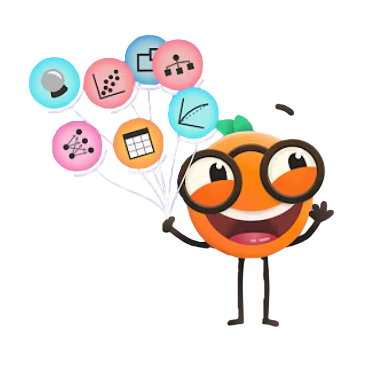
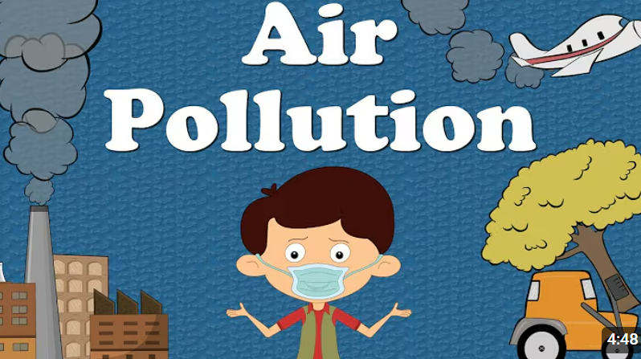
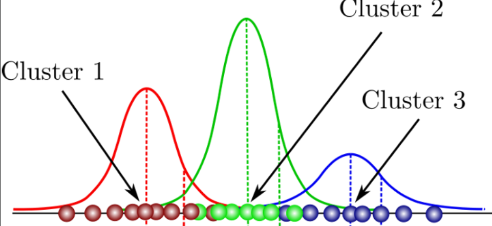
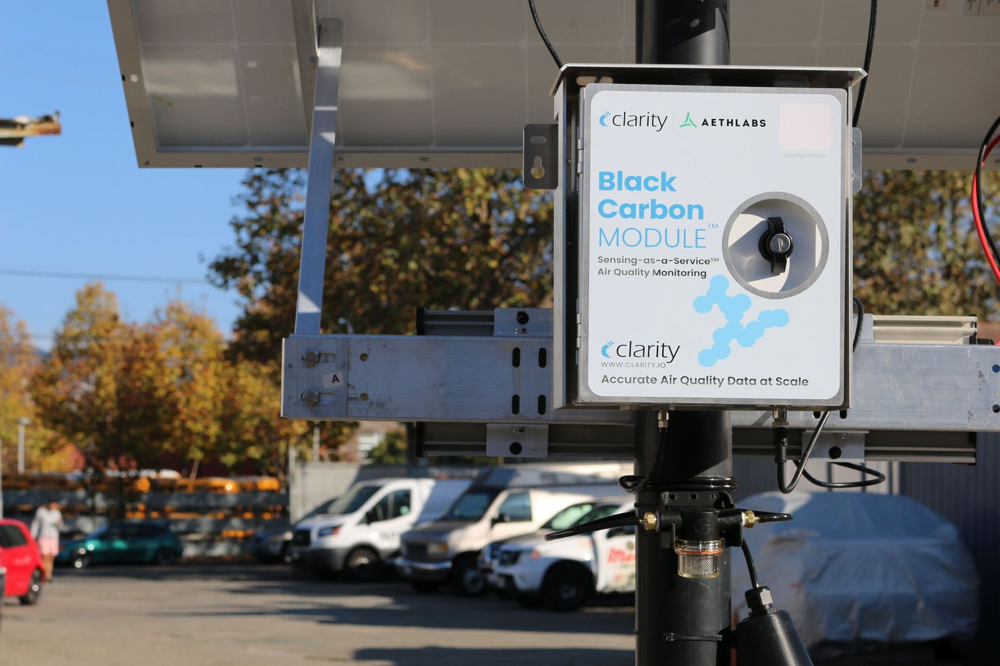

Visualization
K-Means Clustering
Learn how K-Means groups air quality readings for clear insights.

Development
Why Choose AirLytic
See how automation improves accuracy and reliability.
Learn
Explore How It's Implemented
Discover how we implement clustering step-by-step.

Discover
What We Do With Your Data
Turning raw data into actionable environmental alerts.
Case Study
Air Quality Analysis: Metro Case Study
Before and after results of real interventions.

How-to
Practical Steps to Capture Sensor Data
Hands-on guide for setting up and uploading sensor data.